BioComputers
Computer Architecture
کامپیوترهای زیستی
Computer Architecture
present to: Classmates & Mr.GhazanfarNejad
Shiraz technical university of bahonar
Dec 2018
Proudly powered by impress.js*
Contents
before transistors(Vacuum tubes:Diods & Triods)
something in future
Our life revolution story :)
Transistors, principal part of Thech
How do computers work?
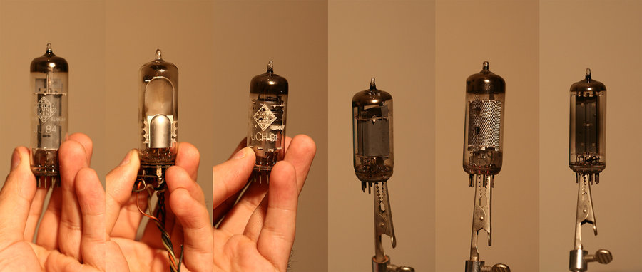
Valves(Vacuum Tubes)
Unreliable Valves
Transistors instead of VacuumTubes
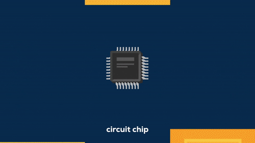
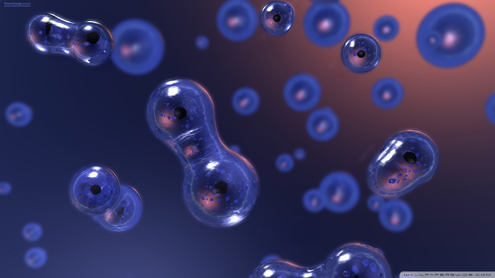
Moore law(Gordon Moore)
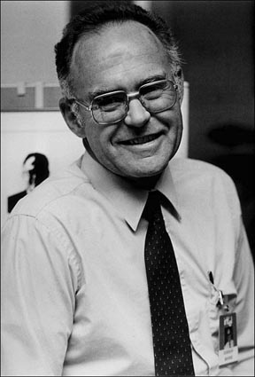Moore law
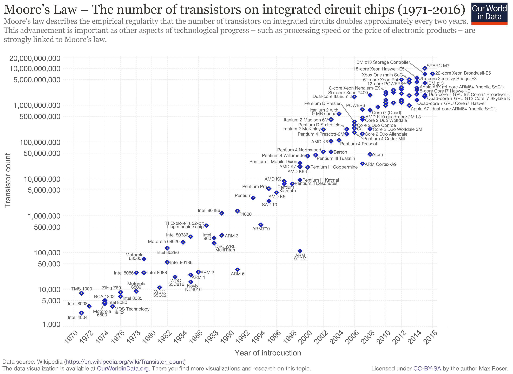
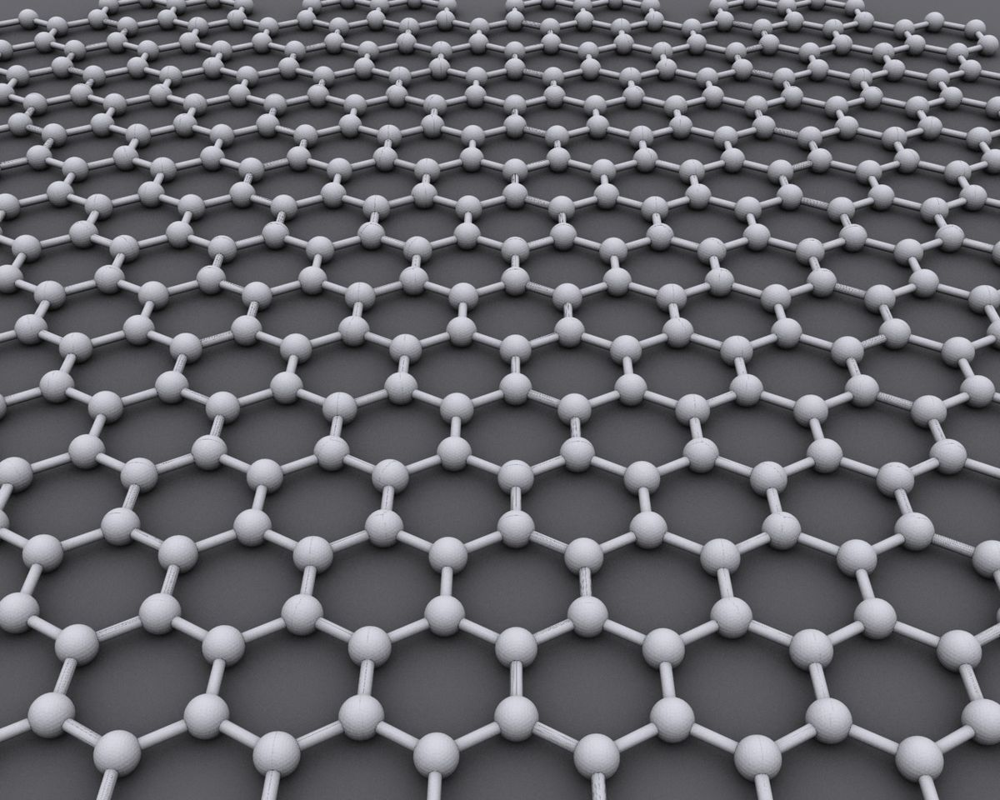
Graphen Transistors
Three dimensional chips
Molecular Transistors
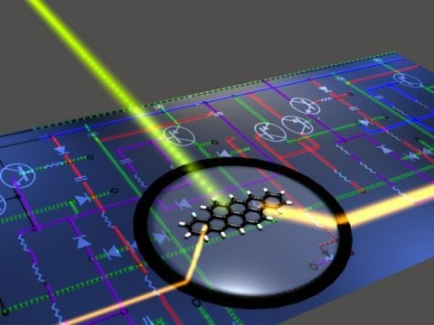
Optical Computing(Optical transistor)
Quantum Computers
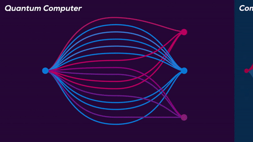
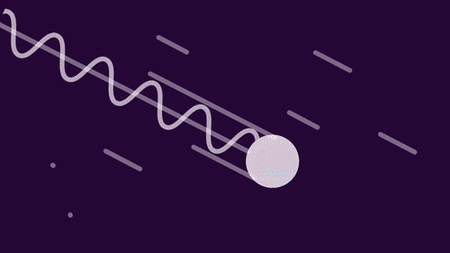
Protein Transistors
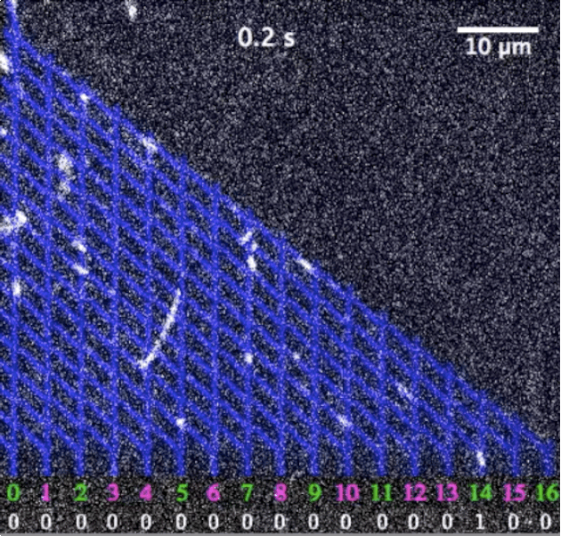
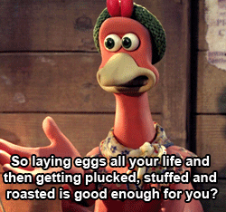
DNA Transistors

| Biological Computers | Traditional Computers |
|---|---|
| Organic(DNA) | Inorganic |
| Massively Parallel | Sequential,limited parallelism |
| High Energy efficient | Energy inefficient |
| Safe for Environment | Harmful to environment |
| Degrade overtime | Last for manyh years |
| Not as accurate | Almost perfect accuracy |
Thank you